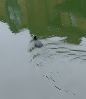
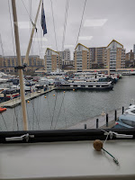
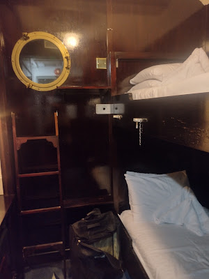
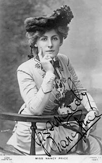
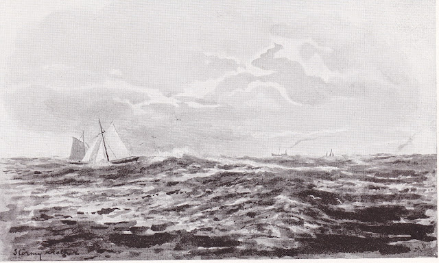

{kind=link}
 |
| View from CA library |
{kind=link}
Inside the Cruising Association library I'd been picking through the shelves like a godwit plunging its beak in the mud. I was looking for books by women sailors, people with sufficient self-belief to consider their experience was worth recording – and who’d found publishers who thought the same. Slim pickings though tasty ones. I haven’t done a scientific analysis of how many dozen book spines one scans to find a woman author’s name - 40:1 maybe?. Today I'd checked very early editions of Lloyds Register of Yachts to count the numbers of c19th women who owned their own boats. In 1878 (the first volume in the CA library collection) there were 4 women out of 1225 yacht owners, in 1883 16 out of 2530 -- which my maths tells me is a better % but would leave me a very hungry godwit if they were all I had to feed on.
{kind=link}
‘My bed was a canvas mattress stuffed with corks on the floor – a brilliant idea of the skipper’s as he said it made a bed by night and a life-buoy in case of disaster, while my bolster was the jib in its little bag. I thought that the awful discomfort and sleeplessness I went through was inseparable from small boat cruising and tried heroically to harden myself into liking it, but looking back on that experience I would risk drowning twenty times over than go through it again!’
(A Yachtswoman’s Cruises by Maude Speed). Perhaps the apparent absence of women from the
water is not so surprising after all.
Yet every so often my beak comes up with a plump and lively lugworm or I stop pretending to be an assiduous godwit and turn into an avaricious seaside gull, as ready to snatch the chips from a picnicker's hand as to bother flying out to sea to fish for my own dinner. The Little Ship Club, tucked under Blackfriars Bridge with the Thames rushing by has a perfectly good library, an enthusiastic volunteer librarian and a chart room where I spend happy hours reading though the club journals. This week, however, I persuaded two wise women, Katy Stickland and Janet Grosvenor, to settle on the LSC classically clubroom leather sofa and just talk while I listened. I’m not normally one for audio books but when they are as interesting as those two all I wanted to do was wing it back to the chart room when they’d gone and try to write down everything they said.
 |
| Little Ship Club cabin If you look out of the window you see the Thames |
{kind=link}
Tim, poor fellow, was in the library trying to plan his next summer’s
Atlantic cruise. If he runs into an
uncharted cave, snags his main mast on its roof then sinks with a hold full of
gold, it’ll lie heavy on my conscience. (That’s the General Grant shipwreck in the
Auckland Islands so don’t worry, wrong hemisphere.) There also was a woman working steadily in the
Cruising Association library, today, using charts and pilot books to plan some future passage.
I love that combination of looking back to adventures of the past and forward
to future voyages. I didn’t disturb her.
So, on this weather-bound February evening with rain spitting
at the window and schools elsewhere closed for snow, let me share this delightful
little fragment of verse which actress Nancy Price chose (or wrote?) to open The Gull’s
Way, her account of a cruise with her husband and a professional skipper along the East Coast of England. It was published in 1937.
But while upon my legs
I'm free
Out in the sunshine I
intend
To dine with God prodigiously.
 |
| Nancy Price (1880-1970) Actress, author, theatre director -- and coastal sailor |
{kind=link}
 |
| 'Stormy Weather' by Maude Speed, vicar's wife, sailor, artist |
{kind=link}